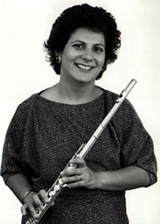
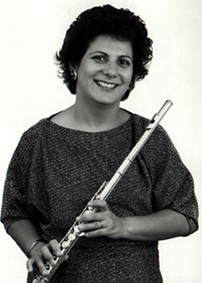

Le
Curriculum Vitae de
Daniela 

DANIELA PISANO flûtiste milanaise diplômée du Conservatoire Giuseppe Verdi de Milan avec Marlaena Kessick, se perfectionne ensuite à Vienne avec Wolfgang Schulz et à Paris avec Patrick Gallois, J.Pierre Rampal e J.L.Beaumadier pour le piccolo.
Elle remporte les concours internationaux de Stresa, Rome, Belveglio et devient lauréate de la Fondation Cziffra.
Flûte solo de l’orchestre de la Communauté Européenne (ECYO) sous la direction de Claudio Abbado, de l’orchestre « i Pomeriggi Musicali » de Milan et de l’orchestre « les solistes de Versailles » Daniela Pisano a donné de nombreux concerts en soliste et en musique de chambre en France, Italie, Belgique, Suisse, Allemagne, ex Yougoslavie, Roumanie et U.S.A.
Flûte solo de « l’orchestra italiana di flauti », directeur musical du Festival Opera Barga en Italie, directeur artistique du Stage de l’Ensemble Eurydice fondé en 1989 à Paris et avec qui elle donne de nombreux concerts.
Elle effectue des enregistrements pour RIFI, Rusty Classica, Tirreno, Concerts Artists, RAI TV, Radio France, Radio suisse italienne et la télé roumaine.
Depuis 1985 professeur au Conservatoire Européen de Musique de Paris, Daniela Pisano est depuis 1996 professeur au Conservatoire « S.Rachmaninoff » de Paris.
 
